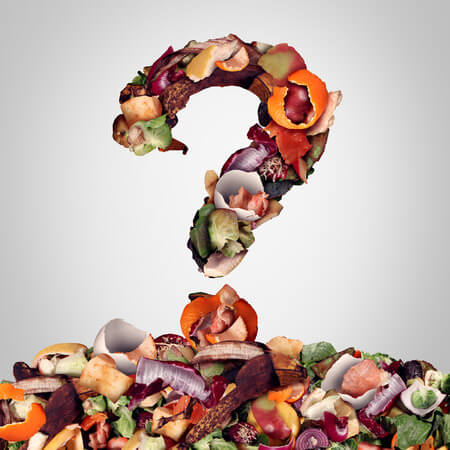
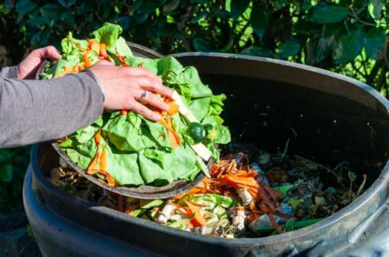

O que é desperdício?
De acordo com o dicionário online, desperdicio é Uso sem proveito, descarte desnecessário de um produto ainda utilizável. Nos dias de hoje, o desperdício está diretamente ligado as atividades industriais e agropecuárias. 
A Gravidade do Desperdício de Alimentos
O desperdício de alimentos, sobretudo os que ocorrem durante a cadeia produtiva, é, sem dúvidas, o de maior escala entre todos os desperdícios. De acordo com a Organização das Nações Unidas para a Alimentação e a Agricultura (FAO), cerca de 1,3 bilhão de toneladas de alimento são desperdiçados por ano, o que representa cerca de 1/3 de toda a produção, sendo a maior parte dela concentrada na etapa inicial de: plantio, embalagem, armazenamento e transporte.
Desperdício de Alimentos no Brasil
Sobretudo no brasil, mas também em outros países emergentes, o desperdício se concentra em duas dessas etapas: armazenamento e transporte, as duas quase sempre ligadas pela questão rodoviária. 
A pesquisa "Custos Logísticos no Brasil", da Fundação Dom Cabral, mostra que a malha rodoviária é utilizada para o escoamento de 75% da produção no país, seguida da marítima (9,2%), aérea (5,8%), ferroviária (5,4%), cabotagem (3%) e hidroviária (0,7%).
De acordo com o mestre em transportes pela Universidade de São Paulo Sergio Ejzenberg, Brasil chegou nesse grau de dependência “Em função de décadas de decisões desastrosa e não há como mudar esse quadro no curto prazo”.
E isso representa um problema, uma vez que o transporte rodoviário é um dos mais poluentes, (correspondendo, juntamente com o ônibus, a metade da poluição do ar de são Paulo) um dos mais caros (sendo, em média, 7 vezes mais custoso que o transporte ferroviário) e ineficientes (uma vez que qualidade de nossas rodovias habitam os últimos lugares no rank mundiais de qualidades de estradas) meios de transportes atuais.
Uso da tecnologia para auxiliar o desenvolvimento sustentável e combater o desperdício de alimentos
Apesar de não poder ser mudado a curto prazo, o investimento em novas tecnologias que auxiliem a construção de estradas, bem como o surgimento de veículos menos poluentes e mais baratos, como caminhões elétricos, que não possuem emissões de poluentes e precisam de menos manutenção e energia para funcionar em comparação com o caminhão convencional, além de uma migração para sistemas de transporte mais sustentáveis e eficientes, como o hidroviário e ferroviário, reduziriam o desperdício de produtos alimentícios (o que reduziria, indiretamente, a necessidade de desmatamentos para novas áreas agrícolas) e a poluição gerada por seu transporte.